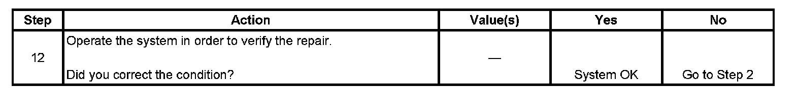

Automatic Day-Night Mirrors Inoperative
AUTOMATIC DAY-NIGHT MIRRORS INOPERATIVE
DIAGNOSTIC AIDS
The automatic day-night feature of the inside rearview mirror may not operate properly or become inoperative due to an intermittent short to battery voltage in the backup lighting system.
TEST
Step 1 - Step 11:
Step 12:
